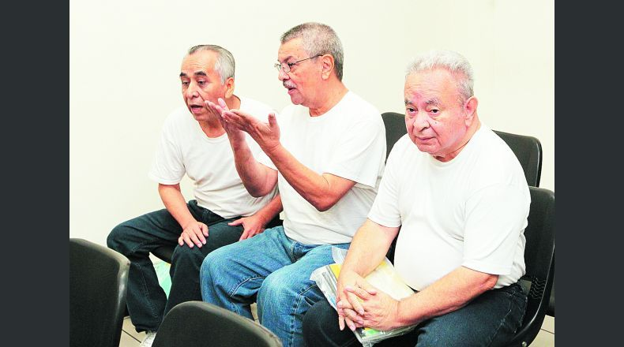

Diario el periodico
Hablan peritos en caso Saca
Pablo Gómez, el auxiliar contable de Casa Presidencial (CAPRES) en el período 2004-2009, solo obedecía órdenes del expresidente Elías Antonio Saca para cobrar cheques y abrir cuentas a su nombre con dinero de los fondos reservados. Del dinero que cobró y de las cuentas a su nombre, Gómez no se benefició. O al menos eso es lo que aseguró ayer el perito Carlos Tejada, quien fue propuesto como testigo por los defensores en el juicio del caso Saca. El perito también aseguró que el patrimonio de Gómez es coherente con los ingresos que ha obtenido. Eso a pesar de que de su patrimonio pasó de $29,433 en 2004 a 43,352 en 2009. Y que en diciembre de 2015 llegó a tener $137,372.17, según la Fiscalía. Los fiscales, en el desarrollo de la audiencia, le preguntaron al perito por las fuentes que consultó para elaborar su informe. Les contestó que para su peritaje contó con los informes de la Corte de Cuentas de la República (CCR) y la entrevista que hizo a Gómez. "Nos queda claro que el perito no tuvo a la vista otra información o documentación de soporte más que la palabra del señor Pablo Gómez y los informes de la Corte de Cuentas. Además, quedaron evidenciadas las contradicciones en las que cayó el perito", señaló el fiscal Mario Huezo. El fiscal agregó que los demás imputados declararon que crearon cuentas bancarias por las que pasaron fondos reservados y se declararon culpables. "En cuanto a los informes que dice el perito que utilizó, hay que recordar lo que el mismo expresidente Saca dijo sobre la Corte de Cuentas: que nunca le hicieron un examen especial o auditoría financiera como manda la ley", dijo Huezo. Los defensores, por su lado, dijeron que, a pesar de todo, los informes de la Corte de Cuentas eran documentos oficiales y que eso fue lo único a lo que el perito pudo tener acceso. Los abogados también habían propuesto para ayer a otros cuatro testigos: dos peritos y dos testigos que la Fiscalía sacó de su lista. Pero cuando el perito Tejada finalizó su declaración, los defensores dijeron que ya no consideraban necesario escuchar a los otros testigos. Pablo Gómez, antes de ser trasladado hacia el penal La Esperanza, de Mariona, para esperar la continuación del juicio, reiteró que se considera inocente de las acusaciones y que nunca se benefició del dinero del fondo reservado. Gómez es el único de todos los imputados en el caso Saca que no aceptó un proceso abreviado a cambio de declararse culpable del delito de lavado de dinero. 
Sigiente